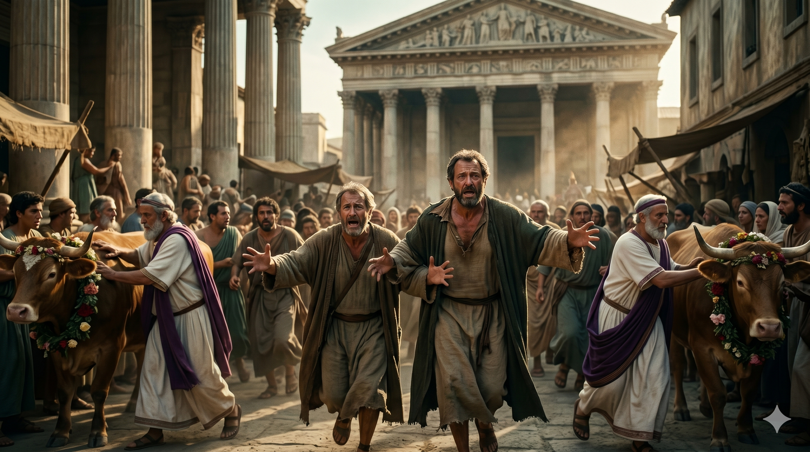
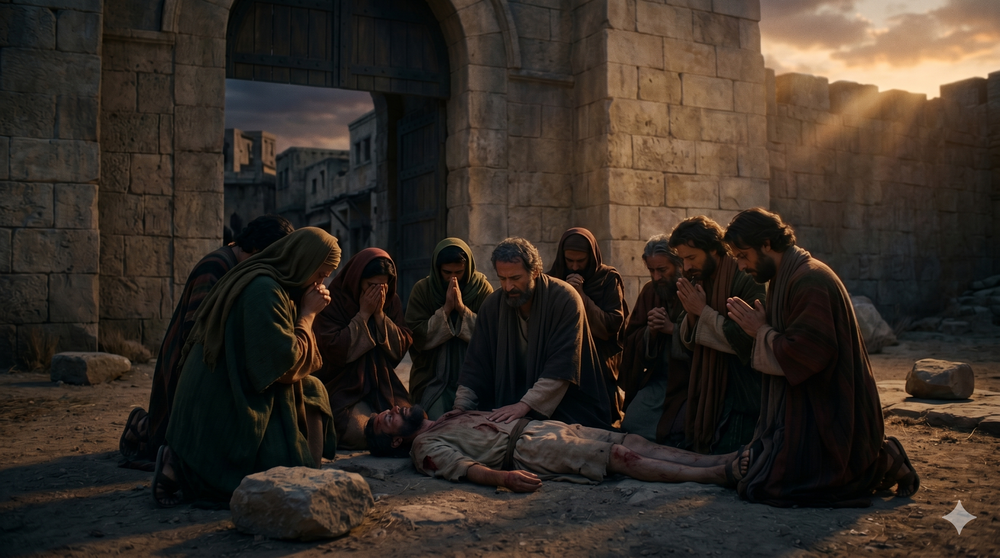

루스드라에서 군중에게 둘러싸여 오해를 받으며 옷을 찢고 달려가는 바울과 바나바 — "우리도 여러분과 같은 성정을 가진 사람이라"고 외치며 참 하나님을 증언하는 두 사도
"두 사도가 오래 있어 주를 힘입어 담대히 말하니 주께서 그들의 손으로 표적과 기사를 행하게 하여 주시므로 은혜의 말씀을 증언하셨더라 … 우리도 여러분과 같은 성정을 가진 사람이라 여러분에게 복음을 전하는 것은 이런 헛된 일에서 돌이켜 천지와 바다와 그 가운데 만물을 지으시고 살아 계신 하나님께로 돌아오라 함이라" — 사도행전 14:3, 15
구브로 섬에서 출발한 바울과 바나바의 첫 선교여행은 소아시아 본토로 이어집니다. 비시디아 안디옥에서 바울은 회당에서 강력한 복음 설교를 전합니다. 처음에는 많은 사람들이 관심을 보였지만, 유대인 지도자들이 시기하여 바울을 방해하고 결국 두 사도는 그 성에서 쫓겨납니다. 그러나 그들은 낙심하지 않았습니다. 이고니온으로, 루스드라로, 계속해서 나아갔습니다. 복음의 길은 환영받는 곳만이 아니라 쫓겨나는 길을 통해서도 뻗어나갑니다. 거부가 사역을 멈추지 못했습니다.
루스드라에서는 놀라운 사건이 벌어집니다. 바울이 나면서부터 걷지 못하는 사람을 고치자, 군중은 바울과 바나바를 헤르메스와 제우스 신으로 오해하고 제물을 드리려 합니다. 이때 두 사람의 반응이 인상적입니다. 그들은 옷을 찢으며 군중 속으로 뛰어들어 외쳤습니다. "우리도 여러분과 같은 성정을 가진 사람이라." 영광을 가로채지 않겠다는 선명한 고백입니다. 그러나 곧 유대인들이 와서 군중을 선동하고, 바울은 돌에 맞아 죽은 것처럼 성 밖에 내던져집니다. 그러나 바나바와 제자들이 둘러서자 바울은 일어납니다. 함께하는 동역이 그를 살렸습니다.

돌에 맞아 성 밖에 내던져진 바울 곁에 무릎 꿇고 있는 바나바와 제자들 — 포기하지 않는 동역의 힘, 함께 일어서는 복음의 공동체
바나바는 이 여행 내내 조용한 동역자였습니다. 바울이 설교하고, 바울이 기적을 행하고, 이름의 순서도 바울이 앞섰습니다. 그러나 바나바는 함께 달렸습니다. 루스드라에서 바울이 돌에 맞아 쓰러졌을 때, 바나바는 그 곁을 지켰습니다. 이것이 동역의 본질입니다. 앞에 서는 것이 전부가 아닙니다. 쓰러진 사람 곁에 서 있는 것, 그것이 때로 더 귀한 사역입니다. 당신 곁에 쓰러진 동역자가 있습니까? 오늘 그 사람 곁에 있어 주십시오.
또한 두 사도가 돌아오는 여정에서 한 일이 우리의 마음을 울립니다. 그들은 핍박을 피해 왔던 길을 다시 돌아가며, 각 교회의 제자들을 굳게 세웠습니다. "우리가 하나님의 나라에 들어가려면 많은 환난을 겪어야 할 것이라"고 권면하면서. 고통을 숨기지 않았습니다. 환난을 미화하지도 않았습니다. 그러나 그 모든 것 너머에 하나님 나라가 있다는 것을 담대하게 선포했습니다. 이것이 진실한 복음입니다.
쫓겨나도 다음 성으로 갔습니다. 돌에 맞아도 일어났습니다.
복음은 우리의 편안함이 아니라 하나님의 신실함으로 달립니다.
환난이 있어도 함께라면, 우리는 다시 일어납니다.